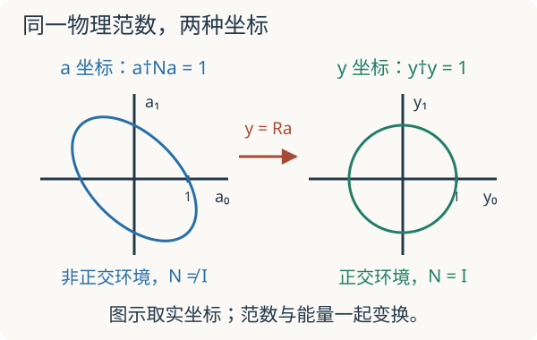

本页目录
基础衔接 07 · MPS 局部优化：范数矩阵为什么不能省略
先修：张量网络与变分方法、量子变分法。本讲从一个两维非正交坐标模型，推导 MPS 局部更新中的广义本征方程。实验只求解一次固定子空间内的优化，不执行完整 DMRG 扫描。
1. 换一种坐标，基态能量怎么会变了？
上一讲解释了有限键维怎样限制纠缠，但“逐点优化张量”还省略了一个问题：张量中各个数值的平方和，是否就是物理态的范数？只有环境基正交归一时，答案才是肯定的。
把除一个中心张量之外的 MPS 张量固定，将中心张量展平成列向量 \(a\)。网络收缩对 \(a\) 是线性的，因此可以记作
\(W\) 的每一列是一个中心坐标取 1、其余坐标取 0 后得到的完整物理态。它们可能不正交，甚至线性相关。\(W\) 通常不显式存储，而是通过环境张量收缩实现；写出它是为了先把逻辑看清楚。
物理内积与能量分子分别是
\(N\) 叫范数矩阵。\(a^\dagger a=1\) 一般不保证 \(\langle\psi|\psi\rangle=1\)。把这两种归一化混用，就可能报出低于真实基态的“能量”。
2. 从变分约束推导广义本征问题
物理 Rayleigh 商是
先假定 \(W\) 满列秩，于是 \(N\) 正定。固定 \(a^\dagger Na=1\)，引入实乘子 \(E\)：
分别变化复坐标的实部和虚部，等价于对 \(a^*\) 求导。驻值要求
左乘 \(a^\dagger\) 就确认乘子正是归一化后的能量。求最低广义本征值得到固定环境下该线性子空间中的最优能量，按变分原理不低于完整 Hilbert 空间基态。它并不自动给出整个非线性 MPS 族的全局最优解。
3. 两个不正交的基矢，把错误暴露出来
取正交态 \(|e_0\rangle=|00\rangle\)、\(|e_1\rangle=|11\rangle\)，其张成的子空间中令能量单位为 1，
如需嵌入完整两 qubit 空间，可取 \(H=-|00\rangle\langle00|+|11\rangle\langle11|-\lambda(|00\rangle\langle11|+|11\rangle\langle00|)\)，在另外两个基态上为零。最低能量仍为 \(E_-\)。
改用两列 \(|w_0\rangle=|e_0\rangle\)、\(|w_1\rangle=c|e_0\rangle+s|e_1\rangle\)，其中 \(c=\cos\theta,s=\sin\theta,0<\theta\le\pi/2\)。两列都归一，却有重叠 \(c\)。在 \(e\) 坐标中
直接矩阵相乘得到
例如能量分子中的交叉项不仅来自物理耦合，也受到基矢重叠影响。\(H_{\rm eff}\) 是这个双线性型在非正交坐标下的矩阵，不能单独将它的普通本征值叫作物理能量。
4. 正交化使问题恢复为普通本征方程
本例 \(W=QR\)，\(Q\) 的两列就是正交的 \(e_0,e_1\)。令 \(y=Ra\)，则
等价地，\(R^{-\dagger}H_{\rm eff}R^{-1}=H_0\)。所以不管怎样改变 \(\theta>0\)，正确能量都不变。也可从
核对：坐标的倾斜改变行列式的非零比例因子，却不改变两个根。

一般正定 \(N\) 可以经 QR、Cholesky 或正交化转成普通 Hermitian 问题。实现时通过分解和三角求解完成变换，通常不显式形成逆矩阵；直接构造 \(N^{-1}H_{\rm eff}\) 还会掩盖原问题的 Hermitian 结构。
5. 实验：只倾斜坐标，不改变 Hamiltonian
默认 \(\theta=60^\circ,\lambda=0.5\)。此时
正确最低能量是 \(-\sqrt{1.25}\approx-1.118034\)，忽略 N 得到约 −1.541275，而错误候选态的实际能量约 −1.074769。实验同时显示错误地解 \(H_{\rm eff}a=E a\) 得到的最低普通本征值，再将这个错误候选向量放回真正的 Rayleigh 商。第三个数仍满足变分下界；错误的普通本征值则没有这样的物理保证。
先预测：保持 λ 不变，只把 θ 从 90° 降到 15°，真实最低能量是否会改变？默认 θ=60°、λ=0.5；正确能量 −1.118034，范数矩阵条件数为 3。横轴扫描 θ 时保持当前 λ 固定；标记表示当前正确解。所有能量均使用同一单位。
\(N\) 的本征值为 \(1\pm c\)，因此
当 \(\theta\to0\)，两列越来越接近平行，坐标变得病态。精确代数中正的角度仍覆盖同一子空间，但有限精度下小误差可能被放大。\(\theta=0\) 时 \(W\) 真正降秩，子空间只剩 \(|e_0\rangle\)；此时不能再用可逆坐标变换证明能量不变。实验取 15° 到 90°，避免把降秩边界当成普通滑块点。
6. 接回 MPS：规范化到底做了什么
将 MPS 在中心两侧写成左块态 \(|L_\alpha\rangle\)、右块态 \(|R_\beta\rangle\)，中心物理指标为 \(s\)：
范数矩阵元便是
若左侧张量满足左正交条件 \(\sum_s(A^s)^\dagger A^s=I\)，从左边界逐层收缩可归纳得到左块态正交；右侧相应满足 \(\sum_s B^s(B^s)^\dagger=I\)，右块也正交。于是中心处 \(N=I\)，局部更新可以安全地求普通本征问题。这就是 mixed-canonical form 的数值价值。
移动中心也能写成一个明确操作。 将中心张量按 \((\alpha,s)\) 合成行、\(\beta\) 作列，做薄 QR：\(a_{(\alpha s),\beta}=\sum_\gamma Q_{(\alpha s),\gamma}R_{\gamma\beta}\)。把 Q 留在本站点、将 R 乘进右邻张量；\(QR\) 乘积没变，物理态不变，而 Q 的列正交使该站点加入左正交区。若需要压缩键维，则另做 SVD 截断并记录丢弃权重；QR 移动中心本身不是截断。
有限开放链上的一次扫描重复“固定环境—求局部最低态—移动正交中心”。局部优化精确时能量不增，但单站点更新可能停在受当前键维或优化路径限制的解。完整 DMRG 还需环境收缩、有效 Hamiltonian 作用、扫描与收敛检查；本页仅补足其中的归一化和坐标步骤。
7. 两道迁移题
题一。 若 θ=90°，错误流程为何碰巧变对？若 λ=0 但 θ 不是 90°，是否仍可省略 N？
检查正交性，而不是检查耦合是否为零
θ=90° 时 c=0、s=1、N=I，两种本征方程相同。λ=0 只让 H₀ 对角，并不改变环境重叠；例如 θ=60° 时 H_eff=[[-1,−1/2],[−1/2,1/2]]，最低普通本征值 (−1−√13)/4≈−1.151388，低于真实最低能量 −1。这说明失误来自范数，不能靠“无相互作用”消除。
题二。 若 W 有非零核，能否给 N 加一个很小的 ηI 后，把结果直接称为原问题的精确变分解？
区分删除冗余与修改问题
Wa=0 的方向不对应非零物理态，Rayleigh 商在那里没有定义。应先识别线性相关列，在实际像空间的独立基上求解。加 ηI 会修改分母，得到的是另一个正则化问题；它可以是有说明的数值策略，但不能无条件继承原物理能量解释。若按阈值丢弃近零方向，还需报告阈值和结果稳定性。
速查与原始阅读
先写 ψ=Wa，再算 N=W†W 与 H_eff=W†HW，约束变分得到 H_eff a=ENa。左右环境正交后才有 N=I；QR 重新分配张量保持态不变，SVD 截断另有误差。参见 Schollwöck 的 MPS／DMRG 综述中变分更新和规范形式的推导。返回张量网络。核查：2026-09-08。
下一步：四自旋乘积 MPS 的完整扫描将局部更新串成一次往返，用能量账本和坐标优化陷阱检查收敛判断。
路线验收：连续作业：从 Schmidt 截断到变分扫描。先独立提交中间计算，再用题解定位需要回补的步骤。
继续计算：MPS 环境与八维中心求解。
继续训练：两站点更新与 SVD 截断把环境、规范与 Schmidt 分解合在一次可复算更新中，并比较截断前后的物理能量。